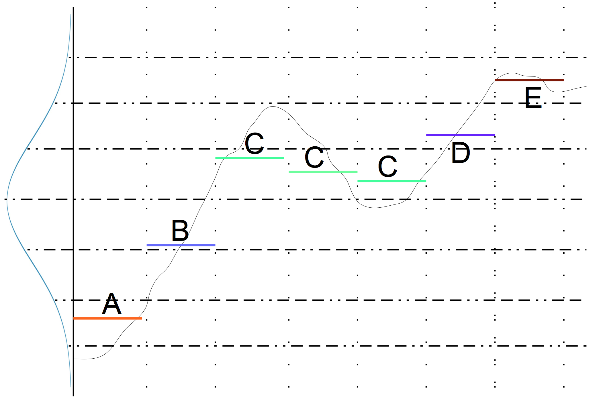

Symbolic Aggregate approXimation Algorithm (SAX) aims to discretize time serie into a sequence of a given alphabet. This alphabet can be whatever you want (letters, numbers, strings ...) seeing as you define it.
But what exactly is this SAX transformation ? Well, the principle is really easy.
If we assume that you have a time serie data of length t. Splitting t in x intervals (let assume that x is a divisor or t) will allow to concentrate the major part of information contained in orginal data in x points. For each interval compute the mean value of the t / x points. Then, using quantiles of a given distrbution you can match each mean value to a letter of your alphabet.

It's common to use the assumption saying that the distribution of x mean values follows a gaussian law, so that gaussian quantiles are used on vertical axis. Of course, this assumption has some strong limits and it exists different works to improve this method. SAX gives really good results and unlike a lot of other methods, it takes linear time to compute so it's really worth it !
If you want to see Static SAX code, you can click here. If you want to see real execution of this algorithm (and our code), learn how to use it, or proof of its efficiency on EEG data, can click to change.